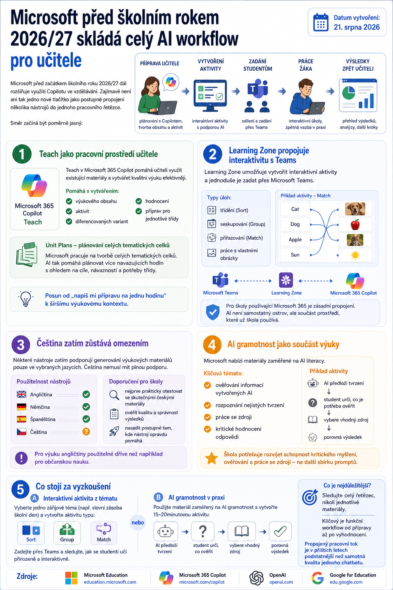

Microsoft před začátkem školního roku 2026/27 dál rozšiřuje využití Copilotu ve vzdělávání. Zajímavé není ani tak jedno nové tlačítko jako postupné propojení několika nástrojů do jednoho pracovního řetězce.

Směr začíná být poměrně jasný:
příprava učitele → vytvoření aktivity → zadání studentům → práce žáka → výsledky zpět učiteli.
Teach jako pracovní prostředí učitele
Jedním z hlavních prvků je prostředí Teach v Microsoft 365 Copilot.
Jeho cílem je využít existující učitelovy materiály a pomáhat s vytvářením:
- výukového obsahu,
- aktivit,
- diferencovaných variant,
- hodnocení,
- příprav pro jednotlivé třídy.
Microsoft zároveň pracuje na tvorbě celých tematických celků prostřednictvím Unit Plans.
To je významný posun od klasického používání AI stylem „napiš mi přípravu na jednu hodinu“.
Směřuje k tomu, aby AI rozuměla širšímu výukovému kontextu a pomáhala plánovat několik navazujících hodin.
Learning Zone propojuje interaktivitu s Teams
Dalším krokem je Learning Zone. Učitel může vytvořit interaktivní aktivitu a následně ji zadat prostřednictvím Teams.
Přibývají například úlohy typu:
- třídění,
- seskupování,
- přiřazování,
- práce s vlastními obrázky.
Pro školy používající Microsoft 365 je zásadní právě toto propojení. Výuková AI není samostatný ostrov, ale součást prostředí, které už škola používá.
Čeština zatím zůstává omezením
Pro české školy je ale potřeba počítat s jazykovou dostupností.
Některé nástroje zatím podporují generování výukových materiálů pouze ve vybraných jazycích a čeština nemusí mít plnou podporu.
Pro výuku angličtiny tak mohou být použitelné mnohem dříve než například pro občanskou nauku.
Před zavedením do běžné výuky je proto rozumné nástroj nejprve prakticky otestovat se skutečnými českými materiály.
AI gramotnost jako součást výuky
Zajímavým směrem je také nabídka hotových materiálů zaměřených na AI literacy.
Nejdůležitější témata nejsou technická. Jde například o:
- ověřování informací vytvořených AI,
- rozpoznání nejistých tvrzení,
- práci se zdroji,
- kritické hodnocení odpovědi.
To odpovídá tomu, co školy budou potřebovat mnohem více než další sbírku „100 nejlepších promptů“.
Co stojí za vyzkoušení
Pro výuku angličtiny lze vzít jedno zářijové téma a zkusit z něj vytvořit krátkou interaktivní aktivitu typu Sort, Group nebo Match.
Druhou možností je využít materiál zaměřený na AI gramotnost a vytvořit jednoduchou 15–20minutovou aktivitu:
AI předloží tvrzení → student určí, co je potřeba ověřit → vybere vhodný zdroj → porovná výsledek.
Pro učitele je přitom nejzajímavější sledovat nikoli jednotlivé generované materiály, ale to, jak dobře celý řetězec funguje od přípravy až po zadání a vyhodnocení.
Právě propojený pracovní tok může být v příštích letech podstatnější než samotná kvalita jednoho chatbotu.
Zdroje
Microsoft Education · Microsoft 365 Copilot · OpenAI · Google for Education.